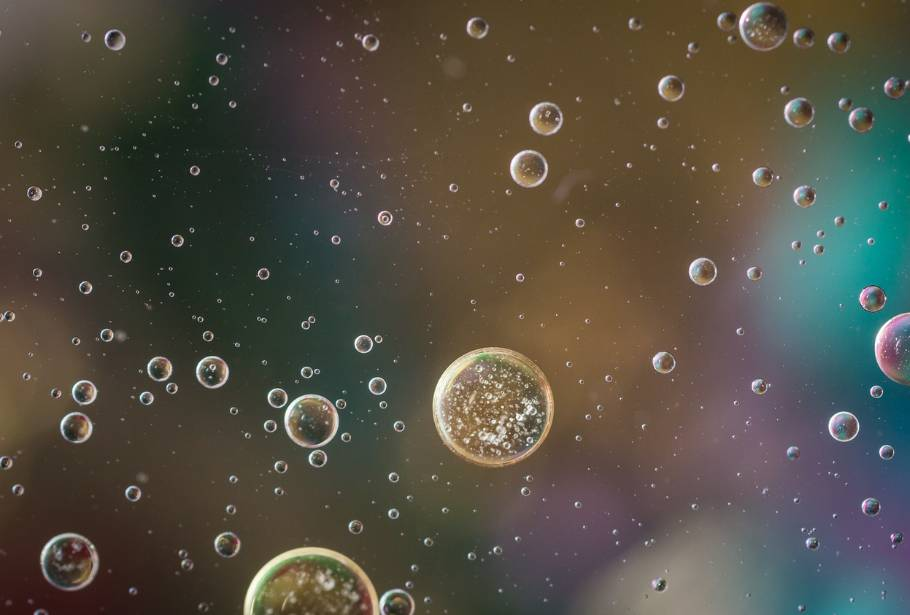

Emulsions, mixes of immiscible liquids such as oil and water, are found in products that range from pharmaceuticals and pesticides to make-up and mayonnaise. ‘Multi-emulsions’, multi-layered matryoshka doll style, oil-in-water-in-oil systems have seen growing interest from academics in recent years. However, current methods work only on large-scales and produce single multi-emulsions at slow rates.Now, academics from the US West Coast have developed a process to solve some of the problem incolved in creating multi-emulsions. Their technology uses sequential, high-energy emulsification to create nanometre-sized droplets of oil, suspended in water droplets, which are in turn suspended in a second oil. This innovation opens the door for products such as novel encapsulated drugs and pesticides, or even for ultra-low-fat salad dressings.
Nanotechnology is a growing research field that manipulates materials on a molecular scale. One prospect is to transform medicine by injecting nanobots into the body where they perform functions such as treating disease.Researchers injected DNA into cockroaches. Tom Spinker/Flickr, CC BY-NC-ND. In February, an Israeli team described devices they made from DNA and injected into cockroaches. By performing a kind of origami, the DNA nanobots assembled themselves and were able to control a molecule that targeted specific cells, so demonstrating their potential to carry out medical functions such as attacking cancers.
Exploring the quantum-classical boundary.At the heart of modern physics lies a circle to be squared. Experiment tells us time and time again that the world at its most fundamental works according to the counter-intuitive laws of quantum mechanics. And yet the macroscopic world we live in seems solidly classical.Quantum optomechanics could help us resolve this paradox. It uses the pressure of confined photons, the quantum-mechanical particles of light, to manipulate the properties of mechanical objects ranging from the nanoscale to the macroscale.
Lowering the speed limit.Light, the fastest thing in the cosmos, can be slowed to walking pace or even stopped in its tracks. Who would have thought it?.Actually, it is a sleight of hand: it is not the light that is slowed or stopped, but the information that it carries. Send an energy-tuned pulse of light into a cloud of supercooled atoms known as a Bose-Einstein condensate, and it resonates with the atoms of the condensate, allowing information to be transferred from the light to the atoms. A second laser pulse can then pull the information out of the atoms and carry it away.This is good news. If we can master the fiddly details of the technique, the ability to store light-borne data indefinitely could usher in the age of super-fast optical computers that do away with cumbersome silicon components.